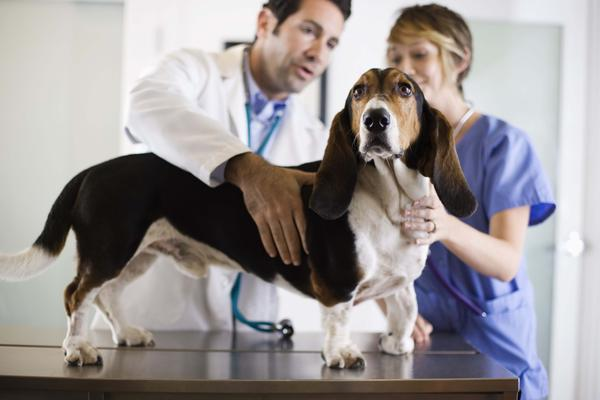

CUIDADO DE TU MASCOTA:
CUIDADO DE TU MASCOTA: |
VETERINARIA "HUELLITAS"
EMPRESA
Somos una empresa que en el año 2009 se inauguró esta moderna y prestigiosa Clínica Veterinaria para atender todas las necesidades de nuestros pequeños amigos en un mismo lugar. Gracias al compromiso y fidelidad de nuestros distinguidos clientes, Clínica Veterinaria Huellitas se consolidó en poco tiempo como una de las clínicas más modernas y reconocidas de la Tercera Región.
Para brindarles siempre la mejor atención, contamos con un excelente equipo de trabajo en permanente capacitación y actualización, preocupados de la salud y el bienestar de su mascota.
EQUIPO
Nuestro grupo de trabajo cuenta con profesionales certificados que continuamente ayudan a entregar cuidados eficientes a nuestros pacientes. Nuestro equipo esta conformado por médicos veterinarios, asistentes veterinarios, secretaria, peluqueras y alumnos en práctica.
FONO CONTACTO
052 2 233133 / 50060075 / 74444971
.
